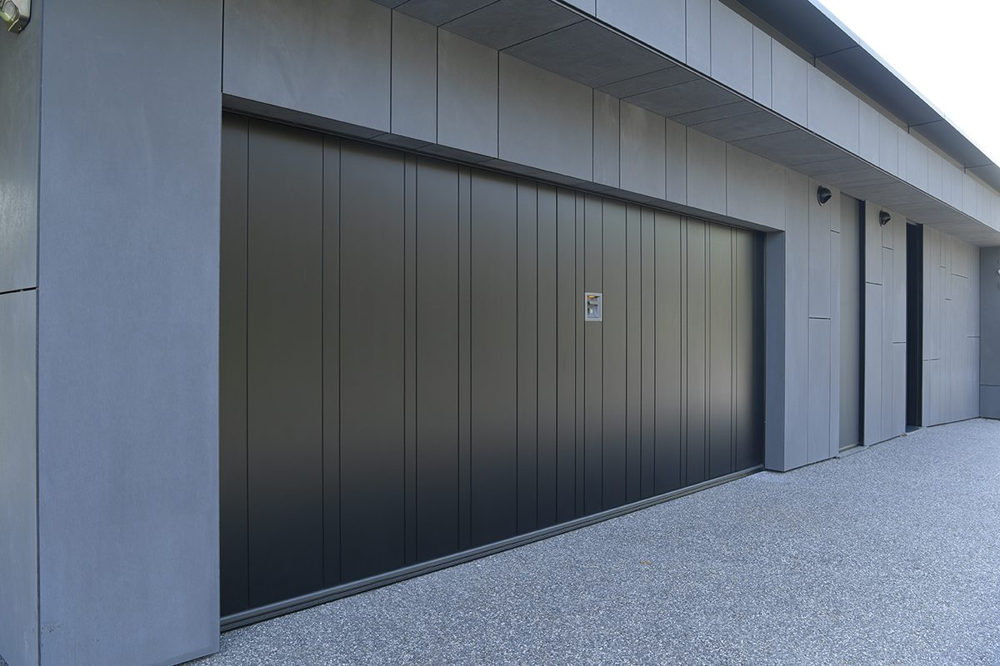
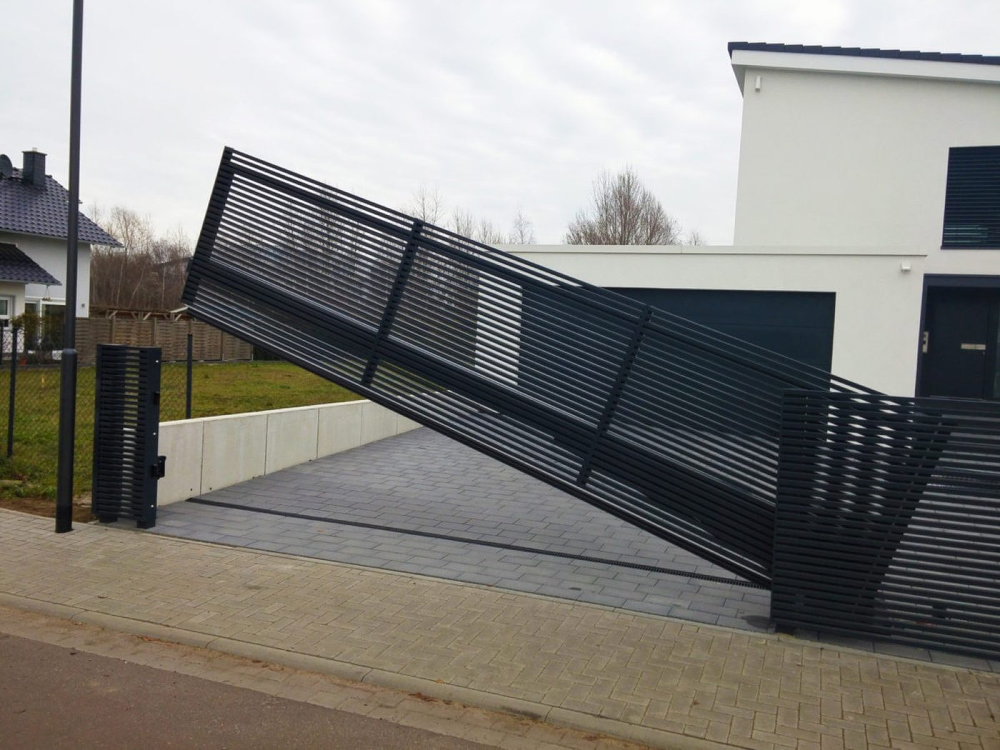
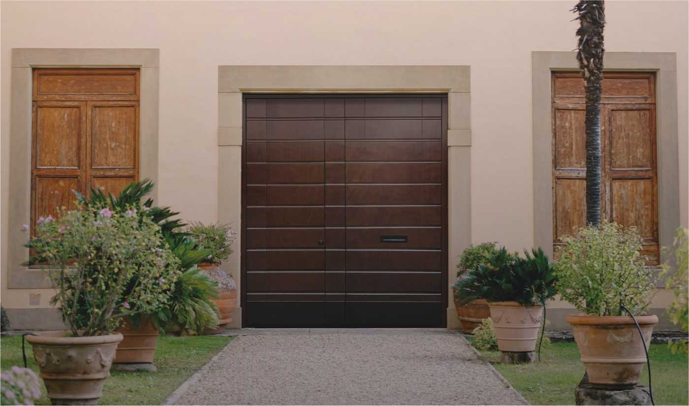
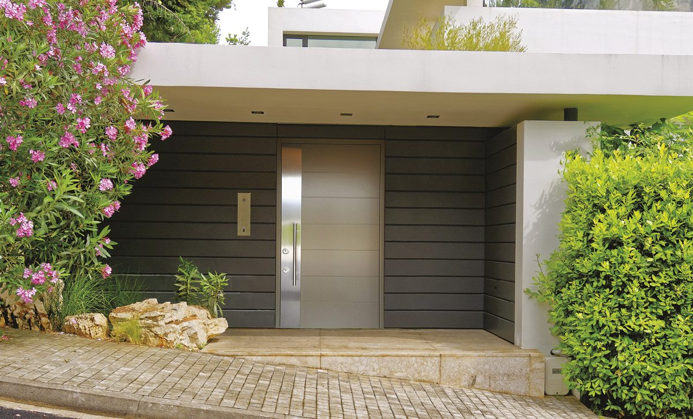

Fünf Produktgruppen. Ein Ansprechpartner.
Garagentore, Hof- und Gartentore, Industrietore, Spezialtore und Sicherheitstüren: alles nach Maß gefertigt, von DTT geplant, geliefert und montiert.

Garagentore nach Maß.
Sektionaltor, Schwingtor oder Flügeltor: in Echtholz, Stahl oder Aluminium, in jeder RAL-Farbe. Unsere Echtholz-Tore entstehen von Hand in einer Manufaktur in den Dolomiten, alle anderen Ausführungen fertigen wir passend zu Ihrem Haus.
- Sektionaltor, Schwingtor, Flügel- und Seitensektionaltor
- Handgefertigte Echtholz-Tore aus dem Herzen der Dolomiten
- Antrieb, Smart-Home-Anbindung und Sicherheitstechnik
- Aufmaß, Montage und Wartung durch eigene Techniker

Hof- und Gartentore für jedes Grundstück.
Schiebetor, Drehflügeltor oder Gartentür: in Echtholz, Aluminium oder Stahl, mit Lamellen, Latten oder geschlossenen Füllungen. Auf Wunsch mit Antrieb, Gegensprechanlage und Zutrittskontrolle.
- Schiebetore, Drehflügeltore und Gartentüren
- Echtholz, Aluminium oder Stahl, viele Füllungen
- Antriebe für den bequemen Alltag
- Gegensprechanlage und Zutritt auf Wunsch

Industrietore für Betriebe, die sich auf ihr Tor verlassen müssen.
Industrie-Sektionaltore, Schnelllauftore, Rolltore, Rollgitter und Falttore für Logistik, Werkstätten, Feuerwehren und Rettungsdienste, Landwirtschaft und Parkhäuser. Dazu Wartung, UVV-Prüfung und Reparatur mit 23 eigenen Servicetechnikern.
- Sektionaltore, Schnelllauftore, Rolltore und Falttore
- Für Logistik, Werkstätten, Rettungsdienste und Landwirtschaft
- UVV-Prüfung, Wartung und Reparatur mit 23 Servicetechnikern
- Wartungsverträge für planbare Betriebssicherheit

Spezialtore für Öffnungen, die kein Standardmaß haben.
Sonderformate, Rundbögen und Schrägen, Falttore für große Öffnungen, verglaste Tore und Nachbauten historischer Tore für Altbau und Denkmalschutz. Mit Schlupftür, Sonderfarben und Materialien nach Ihren Vorgaben.
- Sonderformate, Rundbögen und Schrägen
- Nachbauten historischer Tore für Altbau und Denkmalschutz
- Verglaste Tore und Tore mit Schlupftür
- Sonderfarben und Materialien nach Absprache

Sicherheitstüren und Designer-Haustüren.
Aluminium- oder Holz-Haustür nach Maß, einbruchhemmende Ausführungen je nach Modell, Mehrfachverriegelung und auf Wunsch Fingerprint oder Smart Lock. Mit Seitenteilen und Oberlichtern, im Design passend zu Ihrem Garagentor.
- Aluminium- und Holz-Haustüren nach Maß
- Mehrfachverriegelung, einbruchhemmend je nach Modell
- Fingerprint und Smart Lock auf Wunsch
- Seitenteile, Oberlichter und passendes Design zum Tor
Was jedes DTT-Tor verbindet.
Egal ob Garagentor, Hoftor, Industrietor, Spezialtor oder Haustür: unsere Grundsätze bleiben gleich.
Maßanfertigung
Jedes Tor und jede Tür wird auf Ihre Öffnung gefertigt. Auch Sonderformate und Schrägen sind lösbar.
Eigene Servicetechniker
23 Servicetechniker montieren, prüfen und reparieren Ihre Tore und Türen, ohne Umweg über Subunternehmer.
Echtholz aus den Dolomiten
Unsere Echtholz-Garagentore entstehen von Hand in einer Manufaktur im Herzen der Dolomiten, jedes ein Unikat.
Alles aus einer Hand
Beratung, Aufmaß, Lieferung, Montage und Wartung von einem Ansprechpartner, für alle fünf Produktgruppen.
Bevor Sie anrufen: sehen Sie Ihr Tor.
Sektionaltor, Schwingtor oder Flügeltor wählen, Design und RAL-Farbe oder Holz kombinieren, Tor öffnen und aus jeder Perspektive ansehen. Oder ein Foto Ihres Hauses laden und das Tor direkt in Ihre Garagenöffnung legen.
- 3 Torarten, 7 Designs, 12 RAL-Farben und 6 Holzoberflächen
- Eigenes Hausfoto nutzen, Bild speichern, Link teilen
- Konfiguration mit einem Klick anfragen
Welches Produkt auch immer: reden wir darüber.
Rufen Sie an oder schreiben Sie uns kurz, worum es geht. Wir melden uns innerhalb eines Werktags.